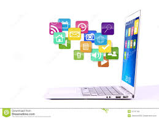

Tiene distintos usos dependiendo del area en el que se quiera usar por ejemplo en el area profecional es:
- Area de la programacion de tecnologia e informatica
- Diseño y estructura de mecanismos de la vida cotidiana
- En la industria de la manufactura
- Investigacion y estudio de las ramas del conocimiento
- Complemento de areas tecnologicas como la robotica, mecatronica etc.
La incorporación de computadoras en casas, escuelas, oficinas, plantas de producción, en la medicinas y en practicamente todas areas cuya actividas estan asociadas con la actividad humana, han comstituido una revolución en los sistemas informáticos, ya que las computadoras ofrecen el medio para realizar comunicaciones e intercambio de información instantáneos entre diferentes áreas de actividad, optimizando recursos y equipos. Los rápidos avances tecnológicos han mejorado los sistemas de generación y acceso a la información.
El desarrollo tecnológico ha sido tan vertiginoso que las computadoras saltaron de los laboratorios y centros especializados a nuestros hogares y centros de trabajo. Podemos ver como las computadoras se han vuelto un elemento más de nuestra vida diaria de igual forma las encontramos haciendo procesos administrativos, que controlando vuelos espaciales o produciendo resultados como por ejemplo ADN de las personas.
Algunos sectores en donde podemos encontrar aplicaciones de las computadoras se describen a continuación, aclarando que son, sólo un ejemplo del universo que existe:
- SECTOR ADMINISTRATIVO - COMERCIAL
- El campo relacionado con la administración, el comercio, las finanzas y la contabilidad es una de las áreas con mayor aplicación para las computadoras debido a la gran cantidad de datos e información que requiere para su operación.
- Administración de nominas
- Administración de inventarios
- Administración de presupuesto
- Control de compras, ventas
- Administración del capital humano
- Transferencia electrónica de fondos
- Cajeros automáticos
- SECTOR INDUSTRIAL
-
En actualidad los sistemas computarizados son indispensables en el proceso productivo de las fábricas (en especial en los países altamente industrializados), para ello se requiere de mecanismos muy complejos y que se apoyan en equipos y sistemas de cómputo. por ejemplo:
- El control de procesos
- El control de la producción
- El control del ambiente de trabajo (ajustes de maquinaria, temperaturas, accesos)
- El control de calidad de los productos
- Sistemas control de Robótica (en plantas automotrices, fabrica de ropa, puertos de embarque)
- SECTOR CIENTÍFICO Y TECNOLÓGICO
-
La computadora se ha vuelto una herramienta fundamental del quehacer científico durante la segunda mitad del siglo XX muchos de los grandes avances hubiesen sido imposibles sin el apoyo de sistemas de cómputo, algún ejemplo los podemos tener en:
- El Diseño (circuitos electrónicos, análisis clínicos, estudios de bacterias)
- En la Simulación de procesos (químicos biológicos, astronómicos, climatológicos)
- En Manejo de sustancias peligrosas (materiales radioactivos, químicos)
- Control y cálculo numérico
- SECTOR DOMESTICO
-
En la vida diaria nos encontramos con multitud de dispositivos computarizados algunos de ellos son:
- Electrodomésticos: hornos de microondas, maquinas de coser, televisores, estéreos, lavadoras relojes, calculadoras y agendas personales electrónicas.
- Reproductoras de discos compactos (CD), y videodiscos (DVD)
- SECTOR MEDICO
-
En este rubro de la introducción de los sistemas computarizados no solo es novedosa sino también muy poderosa, tenemos por ejemplo, importantes beneficios en aspectos como los siguientes:
- Análisis clínicos
- Microscopia electrónica
- Diagnósticos
- Prótesis electromecánicas
- Sistemas de exploración (tomografía axial computarizada, termografía, ultrasonografìa, resonancia magnética nuclear)
- SECTOR DE COMUNICACIONES Y TRANSPORTES
-
Las comunicaciones modernas y los sistemas de transporte han tenido grandes cambios, gracias al uso de la tecnología computacional, aspectos como:
Satélites, cohetes y sondas espaciales: las computadoras están presentes en su diseño, en el lanzamiento y colocación, en el control de la orbita y en la transmisión y procesamiento de los datos obtenidos.
Sistemas ferroviarios: metro ó trenes de levitación magnética requieren del control computarizado para regular la velocidad, paradas, diseño de rutas, pilotaje automático.
Diseño de nuevos transportes: los nuevos vehículos se producen ahora tras una exhaustiva investigación sobre aero dinámica consumo de energía simulaciones y muchas tareas apoyadas por la computadora.
Diseño de carreteras antes de construir una carretera se estudian mediante computadoras las características de los terrenos los trazos óptimos y otras actividades.
- SECTOR EDUCATIVO
-
Las computadoras incursionan en el terreno educativo como un apoyo a los profesores y alumnos, algunas aplicaciones comunes son:
- Educación a distancia
- Sistemas tutoriales
- Programas de apoyo para la enseñanza de varias materias
- Evaluación de conocimientos en línea
- Educación virtual
- Use de materiales multimedia
- ENTRETENIMIENTO
-
En este campo se puede apreciar la presencia de la computación en gran medida, algunos ejemplos son:
- Efectos cinematográficos (especiales)
- Video juegos
- Edición de programas de TV
- Síntesis musical
- Auxiliar deportivo: sistemas de entretenimiento robots, para recoger pelotas, robots seguidores de corredores, computo de puntuaciones, verificación de salidas y llegadas correctas de los atletas
- Simulación de vuelos, autos de carreras, juegos de destreza

|